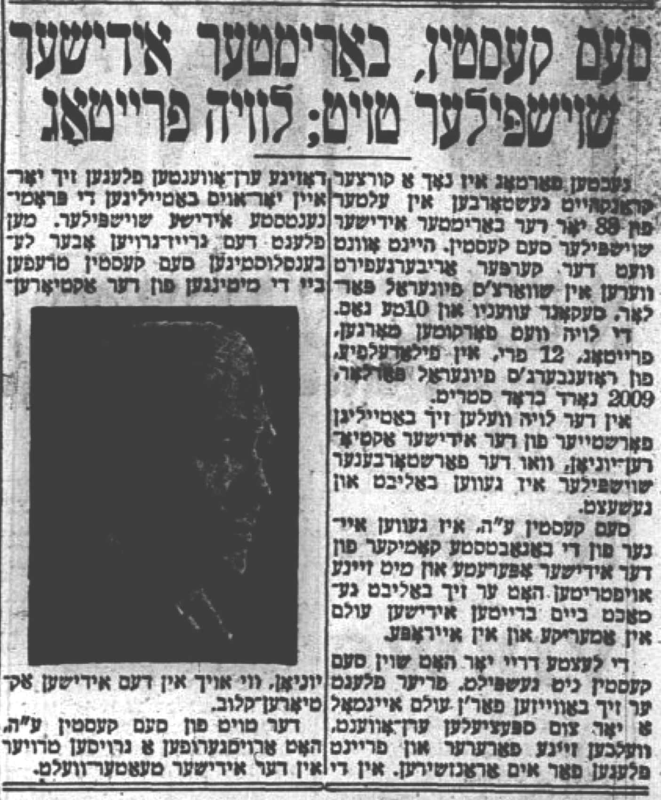

Obituaries
Sam Kasten ז׳׳ל passed away on March 4th, 1953 in New York City, just shy of his 84th birthday (April 21st). From obituaries below, we learn that he suffered dementia in his older years and passed away under very difficult and sad circumstances.
He is buried in Har Jehuda cemetery in Upper Darby, PA (outside of Philadelphia) with his wife (pictured below) and sons.

Translations of obituaries and images of the articles themselves are below. I recommend reading them in order to get the full story, as it were.
March 5th, 1953
Published in Der Tog on 1953-03-05
Sam Kasten, famous Yiddish performer, dies; funeral Friday
Following a brief illness, the 88-year old1 famous Yiddish performer Sam Kasten pass away. This evening, his body will be transported to Schwartz’s Funeral Parlor at 2nd and 10th.
The funeral will take place tomorrow, Friday, at 12 pm in Philadelphia at Rosenberg’s Funeral Parlor, 2009 N Broad St.
A representative from the Hebrew Actor’s Union, where the deceased was beloved and esteemed, will take part in the funeral2.
Sam Kasten ע׳׳ה3 was one of the most highly sought-after comedians in Yiddish operettas, and he was beloved by Jewish audiences across America and Europe4.
The last three years of his life, Sam Kasten didn’t perform any longer. Before then, he would appear before audiences once a year or so for a special “honor-event”5 that his fans and friends would arrange for him. Prominent Yiddish actors would appear in these performances too. Old and age but full of life as ever, he Sam Kasten would also show up at the Actor’s Union meetings, as well as at the Yiddish Actor’s Club.
Sam Kasten ע׳׳ה’s death has brought a great sadness to the theater community.

March 6th, 1953
Published in the Forverts on 1953-03-06
The happy and tragic Sam Kasten
He outlived his generation, his time, and indeed himself. – A modest flower on his fresh grave.
The last few years of his life, Sam Kasten didn’t perform any theater. The last time he appeared on the stage was three years ago at one of the special events honoring him that a few of his close friends used to arrange, sometimes in Second Avenue Theater, sometimes in Public Theater.Hundreds and thousands of his longtime fans used to come see him perform, shaking their heads in wonderment - look how he still dances! Look how youthful he is! And it did them a world of good to see, because if he, the old man Kasten who they remember from back in the old days, can move his feet like that and even do somersaults, then they too would be “alright.” They could stay young just like him.
When they were still young scamps themselves, they saw him perform in Horowitz’s Der Poylisher Yingl and in Shaknovitch’s Immigranten6. Kasten performed in Mogulesko’s roles, immitating his older famous colleague but still with a Kasten-ishness in his acting. And he was the very best dancer, so light on his feet…
But for the last few years of his life, Kasten wasn’t who he used to be. He was always joyful, always had a few jokes ready to go with a smile. But on the inside, when he was by himself, he was deeply uphappy. He had lost two fo this three children - his only daughter Lily7 and his older son Fred8. He had lost his wife Suzie nine years ago9. Like a true actor, he hid his true feelings from the world. But depressed he was.
Lola10, painter and Forverts cartoonist, grew very close to Kasten and took him under his wing. And Kasten, who was a couple decades older than Lola, called him zayde and really clung to the much-younger Lola. More than once when Kasten made yet another excessive “l’chaim”11, Lola would tenderly wrap him up in his coat and take him back to his hotel.
He had lost his wife and two of his children. He also outlived the Yiddish theater, and indeed himself. And he was depressed, miserable - an ibergeblibener12.
According to his son Lewis Kasten, he was more like a child than adult during the last two years of his life13. Nevertheless, from time to time he would regain his memory, and he’d slip out of the house and make for the Yiddish Actor’s Club. They’d have to escort him back home.
One time in the last few months, when he came to the Actor’s Union, he ran into the writer Sholem Perlmutter, took his hand, looked him in the eye and said:
“When - when it comes time for my funeral, come to Philadelphia and a few words about me.”
And the words one could say about him are:
A piece of Yiddish theater is gone along with him. He was among the first there was, from the very start. He began acting in Singer’s Hall in Brooklyn some 60 years ago. After that, he played real theater in Philadelphia in Franklin Theater.
Footnotes
Again, he was actually 83. It’s not clear where 88 came from.↩︎
The representative was Sholem Perlmutter. The article he wrote about his experience is translated below↩︎
עליו–השלום; may peace be upon him↩︎
Note that we don’t actually have any specific knowledge that he ever traveled to Europe; he either did tour Europe but we do not have a record, or this is just embellishment.↩︎
Performances specifially held to honor/benefit an actor; ערן–אָווענט↩︎
These plays, The Polish Boy and Immigrants, were popular in the 1890s/1900s.↩︎
She died of ovarian cancer in 1946 at the age of 48.↩︎
He died of longterm lung complications from mustard gas exposure World War I in 1935 at the age of 39.↩︎
She did in 1944.↩︎
לאָלאַ; The pen name of Leon Israel↩︎
a toast, and of course a drink!↩︎
One who remains; evokes post-Holocaust Yiddish phrasing for the wretched survivors↩︎
In other words, he had dementia.↩︎